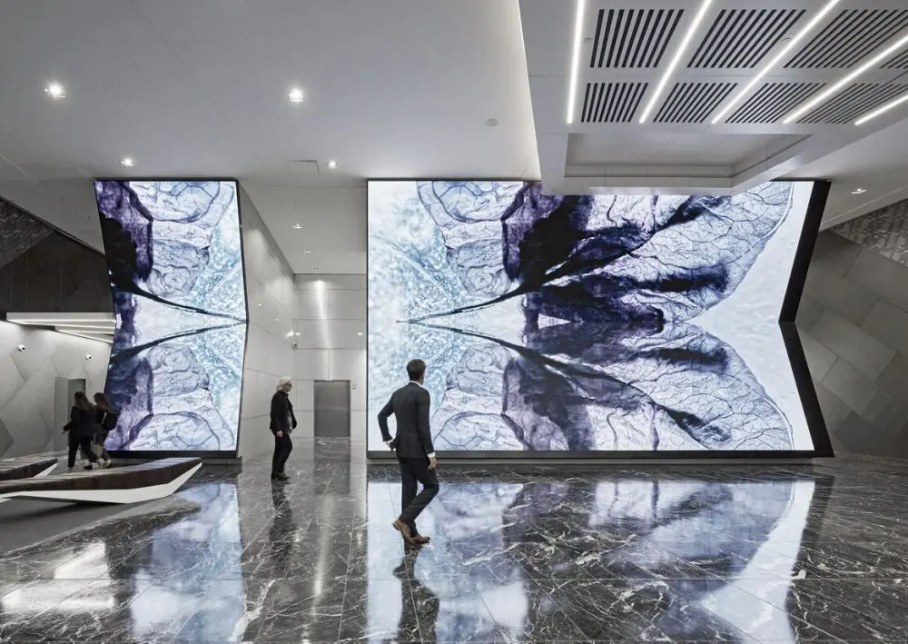

Светодиодные экраны на входную группу
При оснащении входных групп и зон ожидания видеостены играют двойную роль. Во-первых, на них выводится важная информация для посетителей, а также развлекательный и маркетинговый контент. Во-вторых, сам по себе экран может являться элементом нестандартного дизайна, например, если речь идет об изогнутых или полупрозрачных решениях.
Выбрать формат